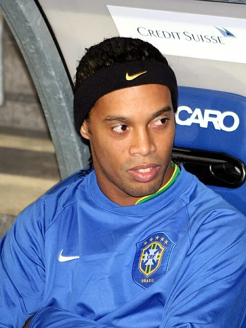

The profile
Ronaldinho
Ronaldinho was born in Porto Alegre into a family deeply connected to football. He grew up playing the game with his brother Roberto, who also became a professional, before entering Grêmio’s setup.
He rose through Grêmio and Paris Saint-Germain before becoming the creative heart of Barcelona's revival. His loose-hipped dribbling, disguised passes and improvisation made difficult moves appear effortless. He later played for AC Milan and Brazilian clubs, but his Barcelona years established his reputation as one of the game's great entertainers.
Ronaldinho added invention to Brazil's 2002 World Cup attack alongside Ronaldo and Rivaldo. In the quarter-final against England, his long-range free kick put Brazil ahead 2–1 and helped send the team into the semi-finals. Brazil went on to win the title; although he did not score in the final, his ability to unsettle defenders was an important part of the campaign.
2002Korea + Japan
Champion
Group C Brazil2 : 1Turkey
- RONALDO50′
- RIVALDO87′ · pen.
- Hasan SAS45+2′
Brazilhome
Starting lineup
- MARCOS
- CAFU
- LUCIO
- ROQUE JUNIOR
- EDMILSON
- ROBERTO CARLOS
- GILBERTO SILVA
- RIVALDO
- RONALDINHO
- JUNINHO PAULISTA
- RONALDO
Substitutions
- 67′DENILSON on · RONALDINHO off
- 72′VAMPETA on · JUNINHO PAULISTA off
- 73′LUIZAO on · RONALDO off
Turkeyaway
Starting lineup
- Rustu RECBER
- Bulent KORKMAZ
- Fatih AKYEL
- Alpay OZALAN
- Umit OZAT
- Hakan UNSAL
- Tugay KERIMOGLU
- Yildiray BASTURK
- Emre BELOZOGLU
- Hakan SUKUR
- Hasan SAS
Substitutions
- 66′Umit DAVALA on · Yildiray BASTURK off
- 66′Ilhan MANSIZ on · Bulent KORKMAZ off
- 88′Arif ERDEM on · Tugay KERIMOGLU off
Group C Brazil4 : 0China
- ROBERTO CARLOS15′
- RIVALDO32′
- RONALDINHO45′ · pen.
- RONALDO55′
Brazilhome
Starting lineup
- MARCOS
- CAFU
- LUCIO
- ROQUE JUNIOR
- ROBERTO CARLOS
- ANDERSON POLGA
- GILBERTO SILVA
- RIVALDO
- RONALDINHO
- JUNINHO PAULISTA
- RONALDO
Substitutions
- 45′DENILSON on · RONALDINHO off
- 70′RICARDINHO on · JUNINHO PAULISTA off
- 72′EDILSON on · RONALDO off
Chinaaway
Starting lineup
- JIANG Jin
- WU Chengying
- LI Weifeng
- DU Wei
- XU Yunlong
- LI Tie
- MA Mingyu
- ZHAO Junzhe
- LI Xiaopeng
- QI Hong
- HAO Haidong
Substitutions
- 62′YANG Pu on · MA Mingyu off
- 66′SHAO Jiayi on · QI Hong off
- 75′QU Bo on · HAO Haidong off
Round of 16 Brazil2 : 0Belgium
- RIVALDO67′
- RONALDO87′
Brazilhome
Starting lineup
- MARCOS
- CAFU
- LUCIO
- ROQUE JUNIOR
- EDMILSON
- ROBERTO CARLOS
- GILBERTO SILVA
- RIVALDO
- RONALDINHO
- JUNINHO PAULISTA
- RONALDO
Substitutions
- 57′DENILSON on · JUNINHO PAULISTA off
- 81′KLEBERSON on · RONALDINHO off
- 90′RICARDINHO on · RIVALDO off
Belgiumaway
Starting lineup
- Geert DE VLIEGER
- Nico VAN KERCKHOVEN
- Jacky PEETERS
- Daniel VAN BUYTEN
- Timmy SIMONS
- Bart GOOR
- Johan WALEM
- Gert VERHEYEN
- Yves VANDERHAEGHE
- Marc WILMOTS
- Mbo MPENZA
Substitutions
- 72′Wesley SONCK on · Jacky PEETERS off
Quarterfinal England1 : 2Brazil
- Michael OWEN23′
- RIVALDO45+2′
- RONALDINHO50′
Englandhome
Starting lineup
- David SEAMAN
- Danny MILLS
- Ashley COLE
- Rio FERDINAND
- Sol CAMPBELL
- Trevor SINCLAIR
- David BECKHAM
- Paul SCHOLES
- Nicky BUTT
- Michael OWEN
- Emile HESKEY
Substitutions
- 56′Kieron DYER on · Trevor SINCLAIR off
- 79′Darius VASSELL on · Michael OWEN off
- 80′Teddy SHERINGHAM on · Ashley COLE off
Brazilaway
Starting lineup
- MARCOS
- CAFU
- LUCIO
- ROQUE JUNIOR
- EDMILSON
- ROBERTO CARLOS
- GILBERTO SILVA
- RIVALDO
- RONALDINHO
- KLEBERSON
- RONALDO
Substitutions
- 70′EDILSON on · RONALDO off
Final Brazil2 : 0Germany
- RONALDO67′
- RONALDO79′
Brazilhome
Starting lineup
- MARCOS
- CAFU
- LUCIO
- ROQUE JUNIOR
- EDMILSON
- ROBERTO CARLOS
- GILBERTO SILVA
- RIVALDO
- RONALDINHO
- KLEBERSON
- RONALDO
Substitutions
- 85′JUNINHO PAULISTA on · RONALDINHO off
- 90′DENILSON on · RONALDO off
Germanyaway
Starting lineup
- Oliver KAHN
- Thomas LINKE
- Christoph METZELDER
- Carsten RAMELOW
- Didi HAMANN
- Jens JEREMIES
- Bernd SCHNEIDER
- Torsten FRINGS
- Oliver NEUVILLE
- Miroslav KLOSE
- Marco BODE
Substitutions
- 74′Oliver BIERHOFF on · Miroslav KLOSE off
- 77′Gerald ASAMOAH on · Jens JEREMIES off
- 84′Christian ZIEGE on · Marco BODE off
2006Germany
Quarter-finals
Group F Brazil1 : 0Croatia
- KAKA44′
Brazilhome
Starting lineup
- DIDA
- CAFU
- LUCIO
- JUAN
- ROBERTO CARLOS
- EMERSON
- KAKA
- RONALDINHO
- ZE ROBERTO
- ADRIANO
- RONALDO
Substitutions
- 69′ROBINHO on · RONALDO off
Croatiaaway
Starting lineup
- Stipe PLETIKOSA
- Josip SIMUNIC
- Robert KOVAC
- Igor TUDOR
- Dario SIMIC
- Darijo SRNA
- Marko BABIC
- Niko KOVAC
- Niko KRANJCAR
- Dado PRSO
- Ivan KLASNIC
Substitutions
- 41′Jerko LEKO on · Niko KOVAC off
- 56′Ivica OLIC on · Ivan KLASNIC off
Group F Brazil2 : 0Australia
- ADRIANO49′
- Fred90′
Brazilhome
Starting lineup
- DIDA
- CAFU
- LUCIO
- JUAN
- ROBERTO CARLOS
- EMERSON
- KAKA
- RONALDINHO
- ZE ROBERTO
- ADRIANO
- RONALDO
Substitutions
- 72′ROBINHO on · RONALDO off
- 72′GILBERTO SILVA on · EMERSON off
- 88′Fred on · ADRIANO off
Australiaaway
Starting lineup
- Mark SCHWARZER
- Lucas NEILL
- Craig MOORE
- Tony POPOVIC
- Scott CHIPPERFIELD
- Tim CAHILL
- Jason CULINA
- Brett EMERTON
- Vince GRELLA
- Mile STERJOVSKI
- Mark VIDUKA
Substitutions
- 41′Mark BRESCIANO on · Tony POPOVIC off
- 56′Harry KEWELL on · Tim CAHILL off
- 69′John ALOISI on · Craig MOORE off
Group F Japan1 : 4Brazil
- Keiji TAMADA34′
- RONALDO45+1′
- JUNINHO PERNAMBUCANO53′
- GILBERTO MELO59′
- RONALDO81′
Japanhome
Starting lineup
- Yoshikatsu KAWAGUCHI
- Alessandro SANTOS
- Keisuke TSUBOI
- Akira KAJI
- Yuji NAKAZAWA
- Hidetoshi NAKATA
- Mitsuo OGASAWARA
- Shunsuke NAKAMURA
- Junichi INAMOTO
- Seiichiro MAKI
- Keiji TAMADA
Substitutions
- 56′Koji NAKATA on · Mitsuo OGASAWARA off
- 60′Naohiro TAKAHARA on · Seiichiro MAKI off
- 66′Masashi OGURO on · Naohiro TAKAHARA off
Brazilaway
Starting lineup
- DIDA
- LUCIO
- JUAN
- CICINHO
- GILBERTO MELO
- KAKA
- RONALDINHO
- GILBERTO SILVA
- JUNINHO PERNAMBUCANO
- RONALDO
- ROBINHO
Substitutions
- 71′ZE ROBERTO on · KAKA off
- 71′RICARDINHO on · RONALDINHO off
- 82′ROGERIO CENI on · DIDA off
Round of 16 Brazil3 : 0Ghana
- RONALDO5′
- ADRIANO45+1′
- ZE ROBERTO84′
Brazilhome
Starting lineup
- DIDA
- CAFU
- LUCIO
- JUAN
- ROBERTO CARLOS
- EMERSON
- KAKA
- RONALDINHO
- ZE ROBERTO
- ADRIANO
- RONALDO
Substitutions
- 45+1′GILBERTO SILVA on · EMERSON off
- 61′JUNINHO PERNAMBUCANO on · ADRIANO off
- 83′RICARDINHO on · KAKA off
Ghanaaway
Starting lineup
- Richard KINGSON
- John MENSAH
- Emmanuel PAPPOE
- Illiasu SHILLA
- John PANTSIL
- Stephen APPIAH
- Sulley MUNTARI
- Eric ADDO
- Haminu DRAMAN
- Asamoah GYAN
- Matthew AMOAH
Substitutions
- 60′Derek BOATENG on · Eric ADDO off
- 70′Alex TACHIE-MENSAH on · Matthew AMOAH off
Quarterfinal Brazil0 : 1France
- Thierry HENRY57′
Brazilhome
Starting lineup
- DIDA
- CAFU
- LUCIO
- JUAN
- ROBERTO CARLOS
- KAKA
- RONALDINHO
- ZE ROBERTO
- GILBERTO SILVA
- JUNINHO PERNAMBUCANO
- RONALDO
Substitutions
- 63′ADRIANO on · JUNINHO PERNAMBUCANO off
- 76′CICINHO on · CAFU off
- 79′ROBINHO on · KAKA off
Franceaway
Starting lineup
- Fabien BARTHEZ
- Eric ABIDAL
- William GALLAS
- Lilian THURAM
- Willy SAGNOL
- Patrick VIEIRA
- Claude MAKELELE
- Florent MALOUDA
- Zinedine ZIDANE
- Franck RIBÉRY
- Thierry HENRY
Substitutions
- 77′Sidney GOVOU on · Franck RIBÉRY off
- 81′Sylvain WILTORD on · Florent MALOUDA off
- 86′Louis SAHA on · Thierry HENRY off